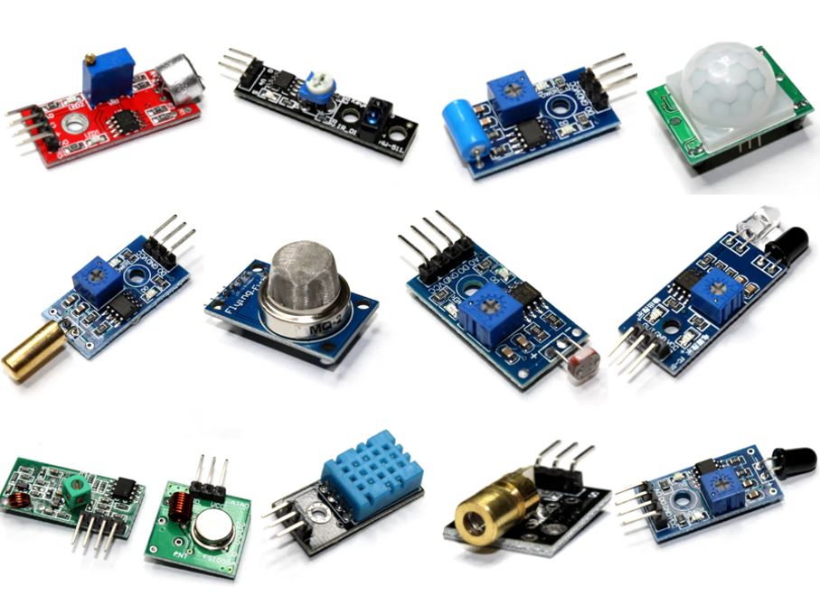
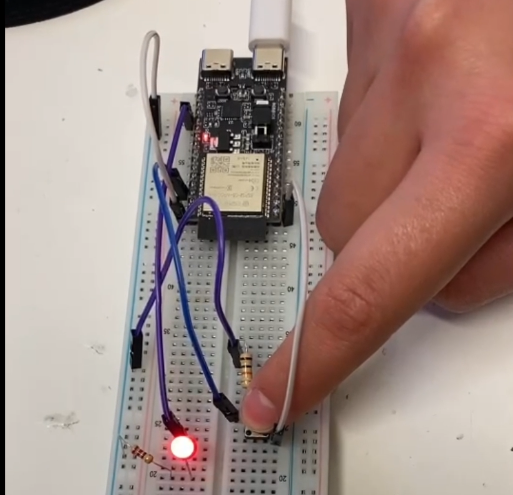
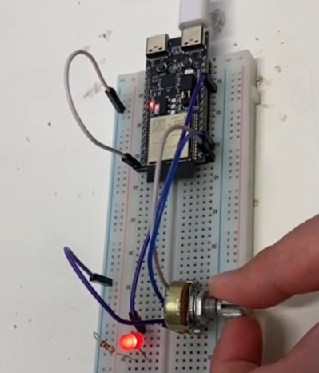
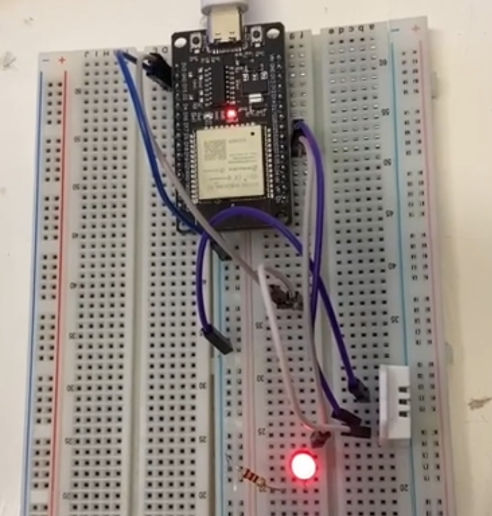
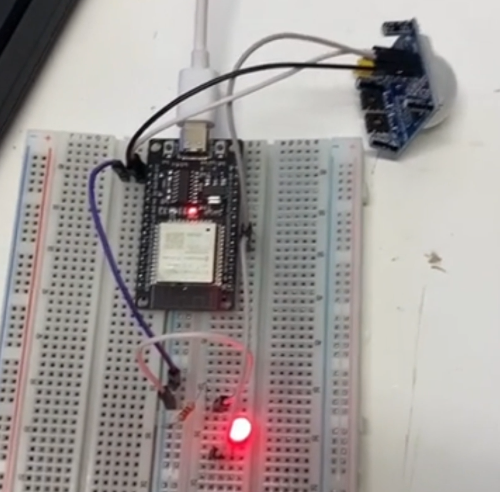

Portafolio de Actividades
Laboratorio de Redes Digitales
Departamento de Ciencias e Ingenierías | Universidad Iberoamericana Puebla, México.
Wifi ESP32 – Thingspeak

- Resumen -
En esta práctica se utilizó ThingSpeak como plataforma de monitoreo en la nube, empleando un NodeMCU ESP8266/ESP32 para recopilar y transmitir datos en tiempo real. Se configuró el entorno en Arduino IDE y Wokwi, verificando la conectividad WiFi del módulo. Se integraron sensores digital (botón), analógico (potenciómetro) e inteligente (DHT22), además de un sensor PIR para detección de movimiento, visualizando los datos en ThingSpeak. Se realizaron simulaciones en Wokwi antes del montaje físico en protoboard, asegurando su correcto funcionamiento. Los resultados confirmaron la integración efectiva de los sensores, reforzando conocimientos en IoT, redes inalámbricas y monitoreo remoto.
- Introducción -
En esta práctica se exploró el uso de la plataforma ThingSpeak en conjunto con el módulo NodeMCU ESP8266 o ESP32, permitiendo la transmisión y monitoreo de datos en tiempo real a través de internet. ThingSpeak es una herramienta de IoT (Internet of Things) que facilita la visualización y análisis de datos provenientes de sensores conectados a microcontroladores con conectividad WiFi.
El objetivo principal fue identificar y comprobar el funcionamiento de esta plataforma mediante la configuración y prueba de sensores digitales, analógicos e inteligentes. Se realizaron conexiones de prueba a redes WiFi, la integración de sensores en un tablero público de monitoreo y la simulación de cada circuito en Wokwi antes de su implementación física.
- Materiales -
1 LED
4 botones
4 resistencias de 1K ohm
Protoboard y cables
1 resistencia de 220 ohms
Node MCU ESP8266 o ESP32
Sensores: Potenciómetro, DHT22, PIR
- Desarrollo -
La práctica inició con la configuración del entorno de desarrollo, utilizando Arduino IDE y Wokwi para simular el funcionamiento del NodeMCU ESP8266/ESP32. Se siguieron los tutoriales de configuración para establecer la conexión del microcontrolador a una red WiFi y verificar su correcta comunicación con ThingSpeak.
Posteriormente, se probaron tres tipos de sensores: Sensor digital (botón): Detecta presiones y envía señales binarias. Sensor analógico (potenciómetro): Proporciona valores de voltaje variables según su posición. Sensor inteligente (DHT22): Mide temperatura y humedad y envía los datos en un formato digital procesado.
Después de comprobar el funcionamiento de estos sensores, se integró el sensor PIR con ThingSpeak, creando un tablero de monitoreo público donde se visualizaron sus lecturas en tiempo real. El código fue modificado para que los datos capturados se enviaran directamente a la plataforma.
Simulación
Antes del montaje físico, se realizó la simulación de cada circuito en Wokwi. Se configuró el NodeMCU para interactuar con los sensores y enviar datos a ThingSpeak, validando la correcta lectura de cada dispositivo y la conectividad del módulo WiFi. Esta fase permitió depurar el código y verificar las conexiones antes del armado físico, asegurando que el sistema funcionara correctamente.
Escaneo wifi
Sensor DIGITAL
Sensor ANALÓGICO
Spensor INTELIGENTE
Spensor PIR
Diseño
Para la implementación de los circuitos, se planificó la conexión de cada sensor al NodeMCU, asegurando un uso eficiente de los GPIOs. Se diseñaron los esquemas de conexión considerando la alimentación adecuada de cada sensor y la estabilidad de las señales. Además, se programaron los códigos necesarios para la recopilación y envío de datos, asegurando la compatibilidad con la API de ThingSpeak.
Construcción
Tras validar la simulación, se procedió al ensamblaje de los circuitos en una protoboard, conectando los sensores y el NodeMCU según el diseño previo. Se cargaron los códigos en el microcontrolador mediante Arduino IDE, y se realizaron pruebas de conexión a internet para confirmar la correcta transmisión de datos a ThingSpeak. Se documentó el proceso con imágenes y videos de las pruebas realizadas.
Escaneo wifi
Sensor DIGITAL

Sensor ANALÓGICO

Spensor INTELIGENTE

Spensor PIR

- Resultados -
Los resultados de la práctica incluyen la verificación del correcto funcionamiento de los sensores y su integración con ThingSpeak. Se logró monitorear en tiempo real los datos enviados por el botón, potenciómetro, DHT22 y PIR, comprobando la capacidad del NodeMCU para recopilar y transmitir información a la nube. Se documentaron los diagramas de conexión, simulaciones en Wokwi, capturas del código en Arduino IDE y videos de prueba física, evidenciando el cumplimiento de los objetivos planteados.
Sensor digital
Sensor analógico
Sensor inteligente
Sensor PID
- Conclusiones -
Esta práctica permitió comprender el uso de ThingSpeak como plataforma de monitoreo de datos en IoT, así como la integración de diferentes tipos de sensores con el NodeMCU ESP8266/ESP32. La simulación previa en Wokwi facilitó la depuración del código y la validación de conexiones, reduciendo errores en el montaje físico.
Se demostró la capacidad del NodeMCU para conectarse a internet y enviar datos en tiempo real, lo que abre la posibilidad de desarrollar aplicaciones más avanzadas en el ámbito del IoT. Además, la experiencia adquirida en la configuración de ThingSpeak y la programación en Arduino proporciona una base sólida para futuros proyectos de monitoreo remoto y automatización.
- Referencias -
Microchip AVR® microcontroller primer: programming and interfacing, third edition (synthesis lectures on digital circuits and systems), BARRETT, Steven F. Pack Daniel J., Editorial Morgan & Claypool, 2019.
K. He, X. Zhang, S. Ren and J. Sun, "Deep Residual Learning for Image Recognition," 2016 IEEE Conference on Computer Vision and Pattern Recognition (CVPR), Las Vegas, NV, USA, 2016, pp. 770-778, doi: 10.1109/CVPR.2016.90.
J. D. Hunter, "Matplotlib: A 2D Graphics Environment," in Computing in Science & Engineering, vol. 9, no. 3, pp. 90-95, May-June 2007, doi: 10.1109/MCSE.2007.55.
- Descargables -
Descargar documento PDF: documento.pdf
Descargar codigo Arduino: codigo.ino
Descargar Archivo 3d .STL: pieza.stl